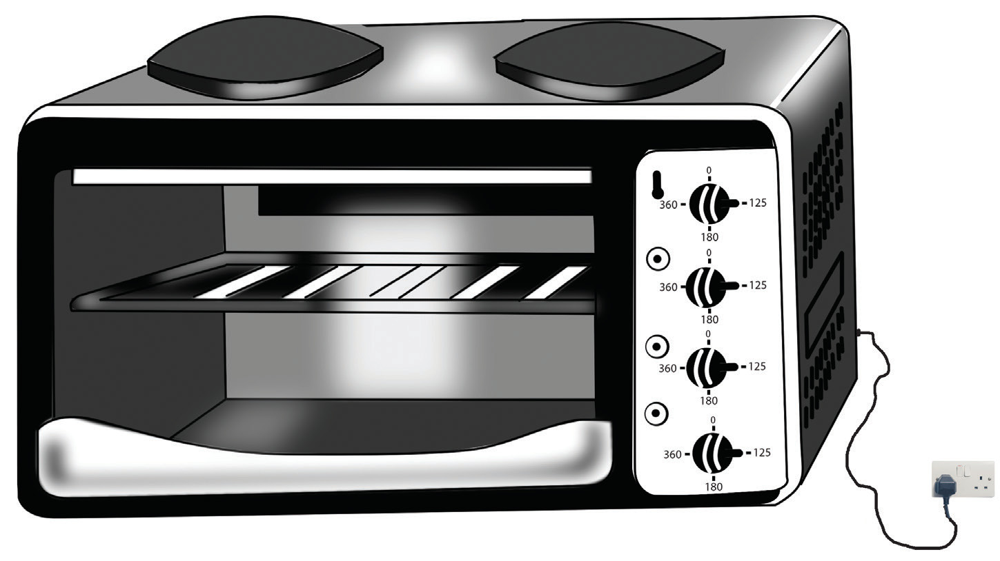

Sehemu za jiko la umeme
Jiko la umeme lina bamba la kuwekea sufuria. Sehemu hiyo hupata joto kutokana na umeme. Umeme huo hupitia kwenye waya ambao umeunganishwa kwenye soketi. Jiko hili pia lina vitufe vya kuwasha na kuzima moto. Kielelezo namba 8 kinaonesha aina mojawapo ya jiko la umeme.

Kutumia na kutunza jiko la umeme
Wakati wa kutumia jiko la umeme hakikisha kuwa waya haujachubuka. Hii itasaidia kuepuka madhara ya umeme. Wakati unapowasha swichi ya soketi mikono yako isiwe na maji. Maji hupitisha umeme, hivyo unaweza kunaswa na umeme kama soketi ina tatizo. Hakikisha umevaa viatu vyenye soli ya mpira wakati wa kutumia jiko la umeme. Viatu hupunguza uwezekano wa kupata madhara makubwa endapo utanaswa na umeme. Chomeka plagi ya waya wa jiko kwenye soketi yenye vipimo sahihi vya umeme wa jiko hilo. Washa swichi kwenye soketi, kisha zungusha au bonyeza kitufe cha kuwashia jiko. Weka chombo cha kupikia jikoni.
Usiwashe jiko na kuliacha bila kubandika sufuria. Hii huepusha madhara ya moto na umeme kupotea bure. Aidha, bamba linaweza kuungua na kusababisha madhara makubwa zaidi. Baada ya kumaliza kupika zima jiko kabla ya kuipua sufuria. Hii inapunguza uwezekano wa kusahau na kuacha jiko likiendelea kuwaka baada ya kulitumia.